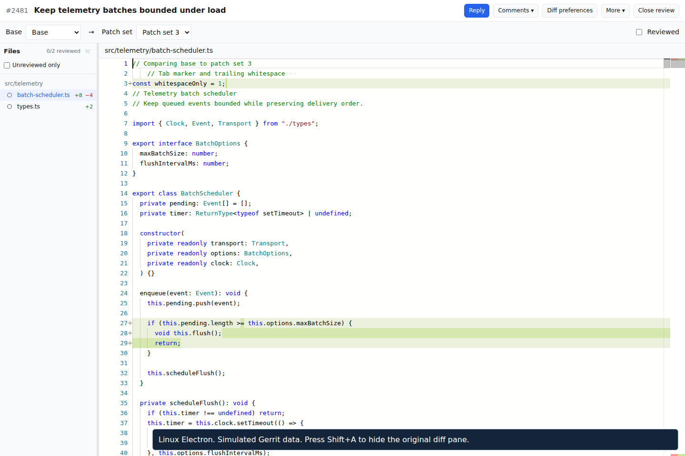
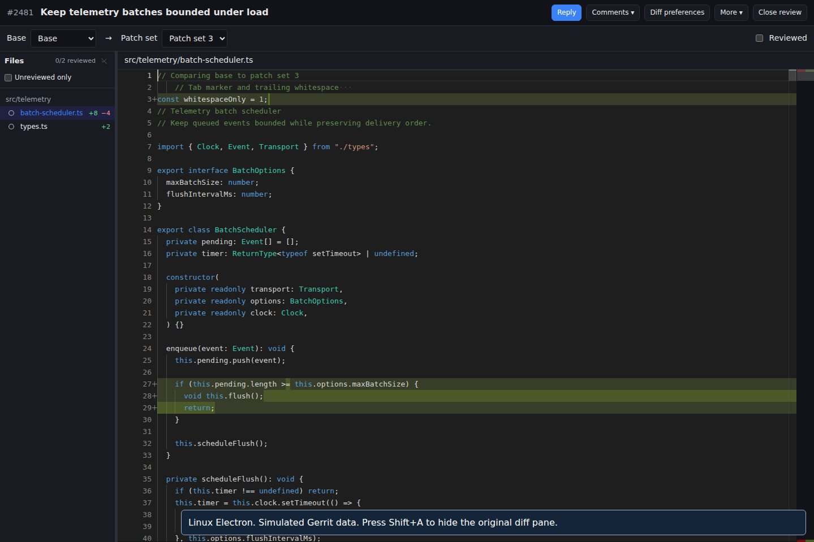

Archive verified
3 of 3 tasks complete
openspec/changes/archive/2026-11-02-add-review-pane-hotkey/
- 14 files preserved during the move.
- The change is absent from the active list.
- Two requirements synced to
review-diff-layout. - All 16 main specs pass validation.
- The updated spec passes strict validation.
The main spec now contains 6 requirements and 16 scenarios.
Verified feature evidence preserved
Shift+A hides the original diff pane. The modified code uses the available width, and the file list stays visible.


Linux Electron with real X11 input and simulated Gerrit data. Both theme recordings remain in this archive.